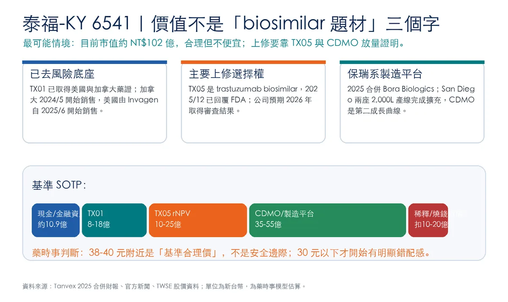
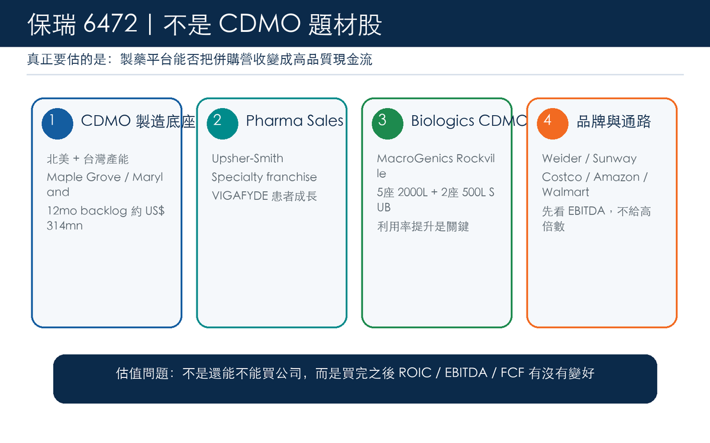
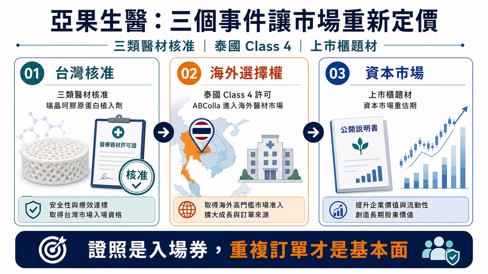
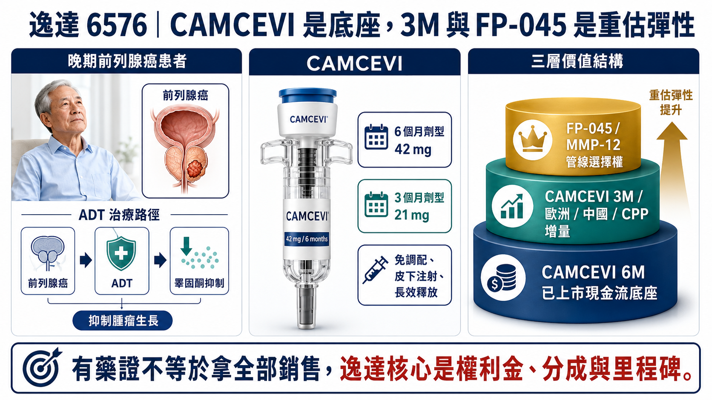
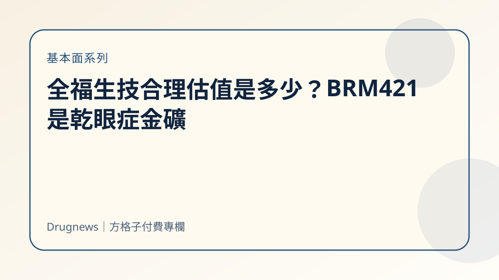
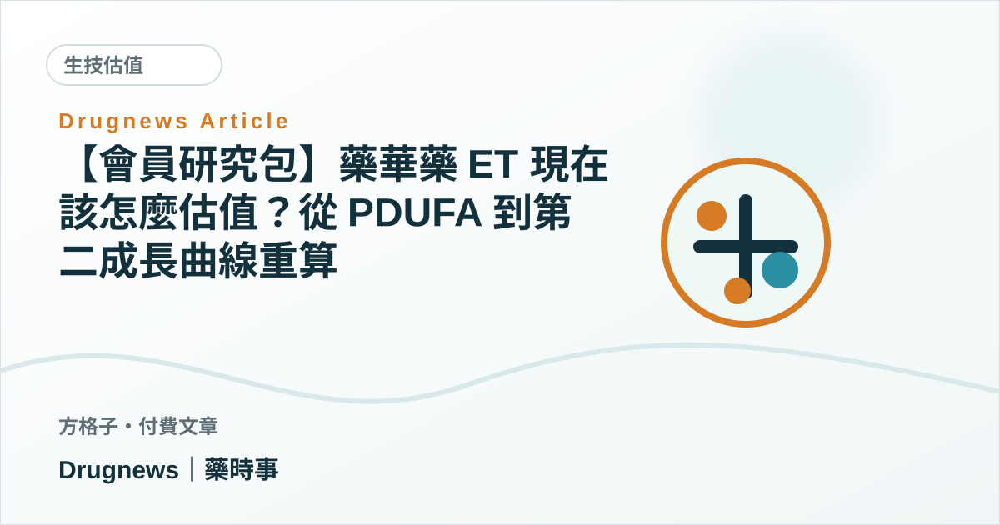
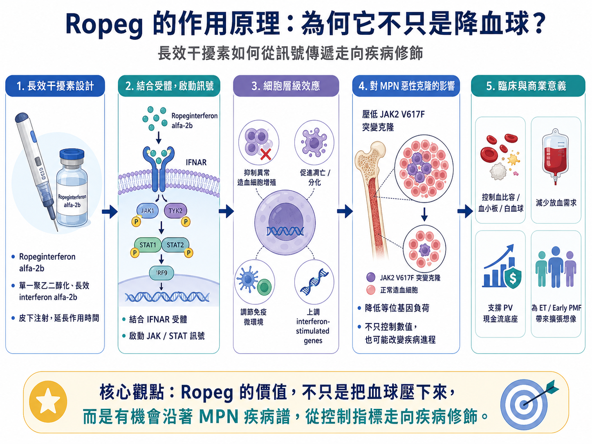

內容系列
基本面
公司基本面追蹤，重點放在估值、營收、臨床里程碑與可驗證的商業假設。
8 篇文章
全部文章

【基本面系列】泰福-KY 合理估值是多少？TX05 CRL 後，41.65 元買到的是什麼？
泰福-KY 不是單純 biosimilar 題材股。這篇把 TX01、TX05、Bora Biologics、San Diego 生物製劑 CDMO、現金水位與股本稀釋拆成 SOTP，判斷 38.55 元附近是否真的便宜。

【基本面系列】保瑞合理估值是多少？它不是 CDMO 題材股，而是台灣少數能用併購把藥品現金流做大的製藥平台
保瑞不是單純 CDMO 題材，也不是普通學名藥公司。這篇用營收、EBITDA、自由現金流、淨負債與平台倍數，重算 412 元附近到底買到什麼。

【商業分析】亞果生醫暴漲後，合理估值到底是多少？從三類醫材、患者池到 rNPV 重算一遍
投資理財內容聲明 本文為產業研究與估值框架分析，目的在於拆解生技醫藥公司價值驅動因子、患者池、手術池、醫材證照、通路放量、財務結構與資本市場變數，不構成任何投資建議、買賣推薦或收益保證。文中部分估值參數為藥時事模型假設，所有數字都應該隨公司財報、股本變化、上市櫃時程、證照進展、訂單放量、醫院採用與市

【基本面系列】逸達合理估值是多少？CAMCEVI 是現金流還是選擇權？
逸達不是純夢想股，也還不是完全兌現的獲利股。本文拆 CAMCEVI 已上市現金流、3 個月劑型與海外 CPP 增量、FP-045 與 FP-025 選擇權及 SOTP 估值。

〖基本面系列〗全福生技合理估值是多少？BRM421 是乾眼症金礦，還是市場把眼科平台夢買得太早？
全福不是單純乾眼症大市場概念股，也不是失敗新藥股；本文拆解 BRM421、BRM424、PDSP 平台、現金與稀釋風險，重算合理估值區間。

【會員研究包】藥華藥 ET 現在該怎麼估值？從 PDUFA 到第二成長曲線重算
藥華藥 ET 進入 PDUFA 倒數後，估值該重算哪幾個參數？這篇拆解成功率、上市時間、峰值銷售與折現率哪些能上修，哪些還不能先算滿。
【會員研究包】近期臨床進展該怎麼重算估值？藥華藥 ET 與中裕 TMB-365/380 兩個對照案例
很多公司簡報聽完，市場第一個反應往往不是「哪個估值參數變了」，而是「管理層今天講得很有信心」。 這其實很危險。 因為簡報的任務，本來就不是替投資人做估值，而是替公司整理出一套最有利的敘事順序。 所以對我來說，簡報後真正要做的事，不是把投影片重抄一遍，而是立刻回答一個問題：

【基本面系列】藥華藥合理估值是多少？
藥華藥 台灣生技股王市，值站到 3,000 億台幣，到底還有多少是基本面，多少是預付未來？ 藥華藥是少數已經走到全球銷售、營收放大、獲利兌現的公司。 2025 年藥華藥合併營收約 NT$156 億，稅後淨利約 NT$50 億，EPS 13.64 元。2026 年第一季營收約 NT$51 億，EP